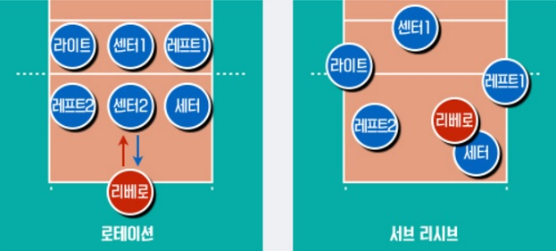

현대 프로 배구는 6인제로만 운영한다. 실내에 한해 9인제 배구도 있지만, 6인제 배구에 밀려 공식 경기에서는 이미 자취를 감췄다. 현재 일반인 사이에서 사회인 체육으로만 운영. 본래 9인제와 6인제는 인원수 말고도 규칙에서 다른 점이 굉장히 많았는데, 6인제 배구의 계속된 규칙 개정으로 지금은 많이 비슷해졌다. 총 5세트로 경기하는데, 1~4세트는 25점제 랠리 포인트 방식으로 진행하며, 만약 4세트까지 2:2 동점인 상황이 나왔을 경우 마지막 5세트에서는 15점제 랠리 포인트 방식을 사용한다. 3세트를 먼저 따는 쪽이 승리하므로 경기 승리를 위해 따야 하는 최소 득점은 75점인 셈이다. 다만 이론상 65점이 가능하다. 3-2로 이기되 지는 세트에서는 점수를 못 내면 되므로. 어느 한 팀이 먼저 25점을 획득하면 세트가 마감되며, 반대편으로 코트를 바꾼다. 단, 24:24가 되면 '듀스'라 하여 25:24에서 세트를 마감하지 않고 2점 차이가 날 때까지 경기를 계속한다. 5세트에서는 양팀 중 먼저 8점에 도달하는 순간 서로 코트를 바꾸며, 경기자의 위치는 그대로. 물론 14:14에서도 듀스를 적용한다.
타임아웃은 각 팀이 세트당 두 번, 30초씩 부를 수 있다. 그리고 1~4세트의 경우 양 팀 중 어느 한 팀이 8점, 16점에 먼저 도달하면 테크니컬 타임아웃을 60초씩 양팀에게 부여하는 경우도 있다. 그리고 다리나 머리를 써서 공을 넘겨도 반칙이 아니다! 원래는 공을 다룰 때 오로지 상반신만 사용해야 했었지만 1990년대 중반에 규칙이 개정되며 서브는 반드시 손으로 하되 그 외에는 신체 어느 곳으로도 공을 쳐낼 수 있다. 배구 경기에서 손을 주로 쓰는 이유는 그렇게 해야 리시브-세팅-공격의 3단이 원활하게 이뤄질 수 있기 때문. 이 부분은 KBS 스펀지에서 소개하면서 일반인들에게 어느 정도 알려졌다. 이 탓에 가끔 축구나 족구 좀 한다는 사람이 어쩌다가 배구를 하게 되면 발이 더 편하다면서 세팍타크로를 하는 모습을 볼 수 있다.
